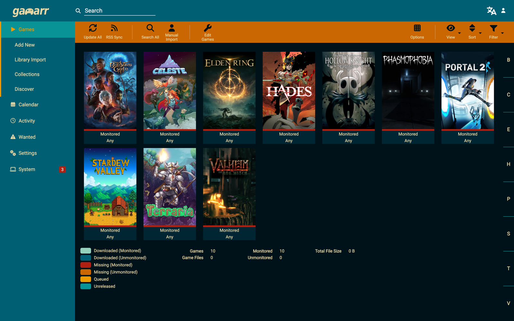
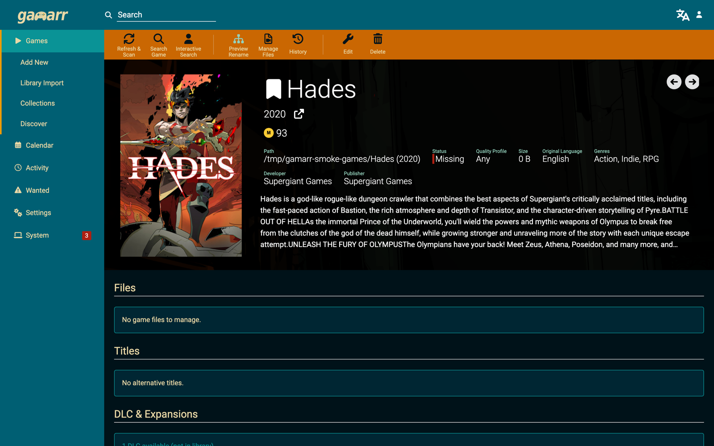
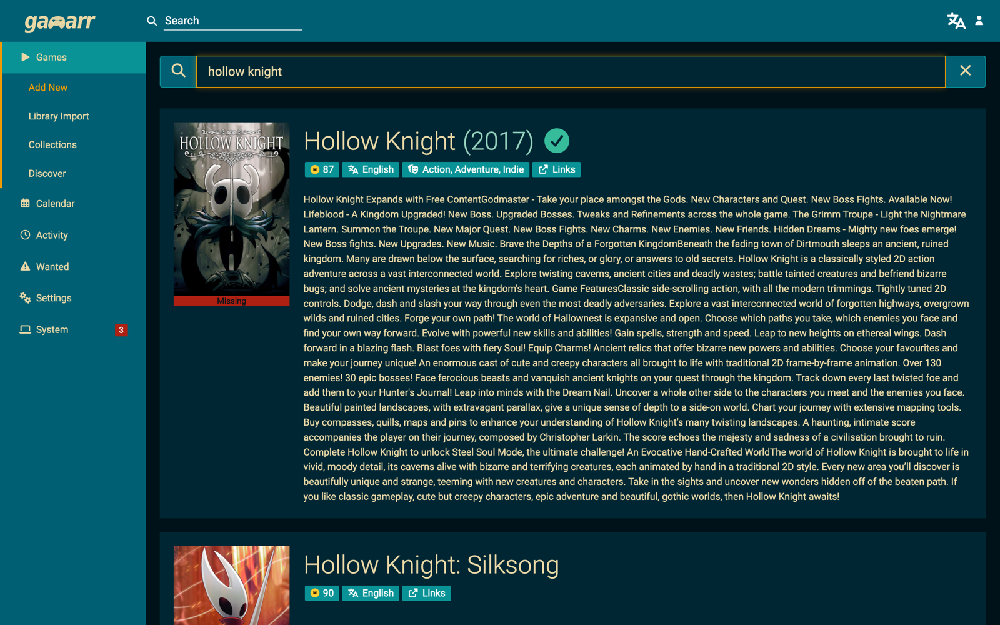
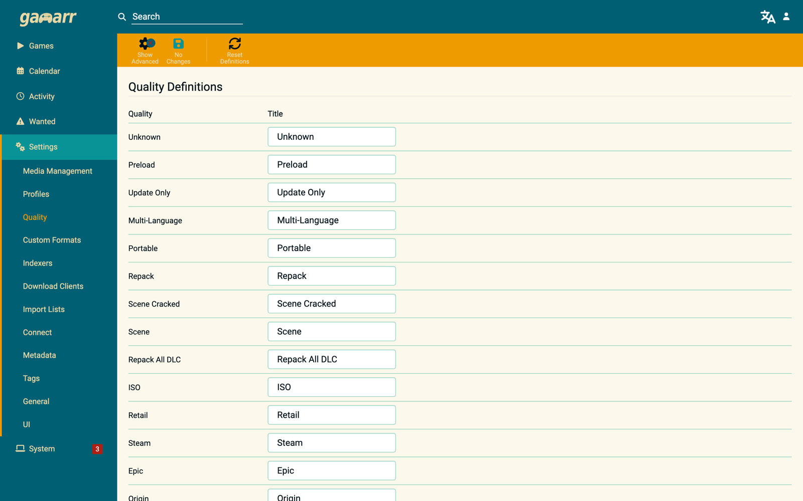

What makes it different from the other *arrs
Games are not movies, so Gamarr models the things only games have. It reads
versions, updates and DLC out of release names and tracks them as separate
slots under one library entry — updates land in
Updates/<version>/ next to the base game instead of
replacing it, DLC in DLC/<name>/. Each slot is individually
monitored and searchable, and the library upgrades itself when a newer version
or a more complete repack shows up.
- A game-native quality model — Scene, GOG (DRM-free), Repack, ISO, Retail, Portable — rather than video resolutions.
- Metadata merged from Steam (no API key needed), IGDB and RAWG into one record.
- Steam library and wishlist import lists, so Gamarr monitors your backlog for you.
- One library entry per platform for multi-platform titles, each with its own folder, quality profile and platform-filtered searches.
- The usual *arr machinery: manual and automatic search, RSS sync, failed download handling, renaming with game-aware tokens, and around twenty notification providers.
- Works with SABnzbd, NZBGet, qBittorrent, Deluge, rTorrent, Transmission and more, and takes indexers from Prowlarr or Jackett over Torznab.
Install with Docker
services:
gamarr:
image: ghcr.io/gamarr-app/gamarr:latest
container_name: gamarr
environment:
- PUID=1000
- PGID=1000
- TZ=Etc/UTC
volumes:
- ./gamarr-config:/config
- /path/to/games:/games
- /path/to/downloads:/downloads
ports:
- "6767:6767"
restart: unless-stopped
Then open http://localhost:6767. Standalone builds for Windows,
Linux, macOS and ARM (including Raspberry Pi) are on the
releases page.
Screenshots



